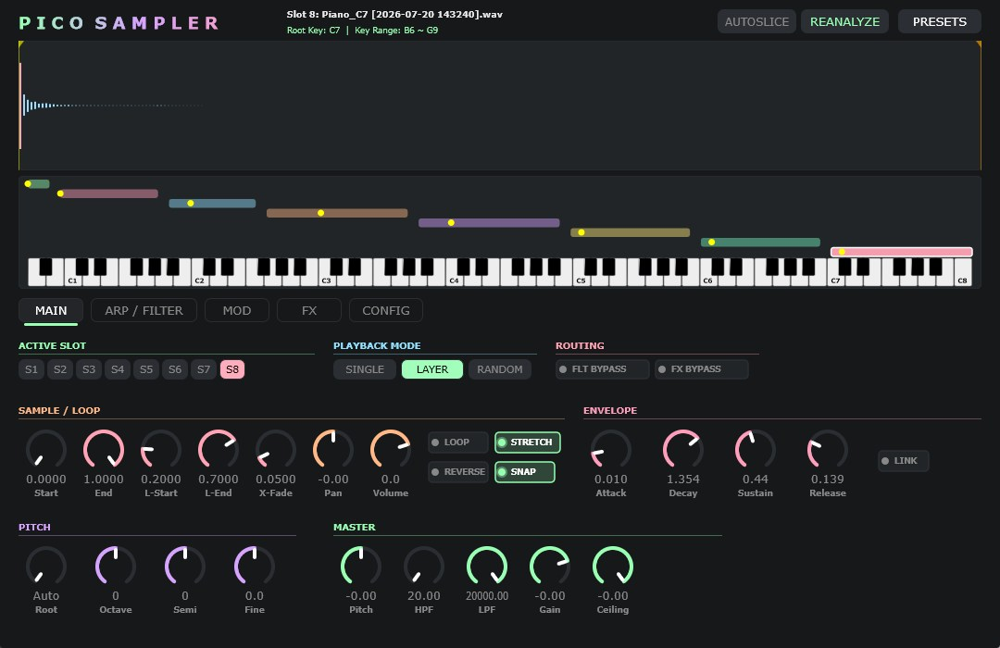
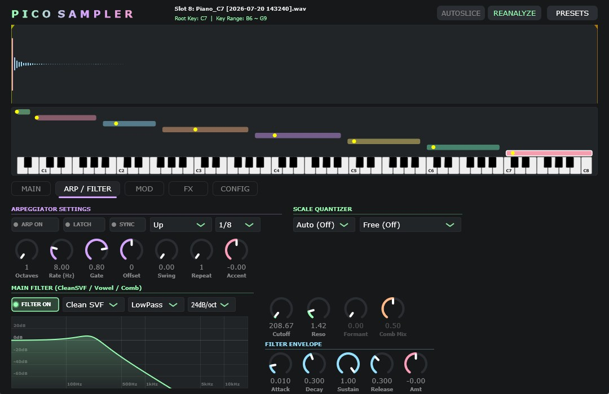
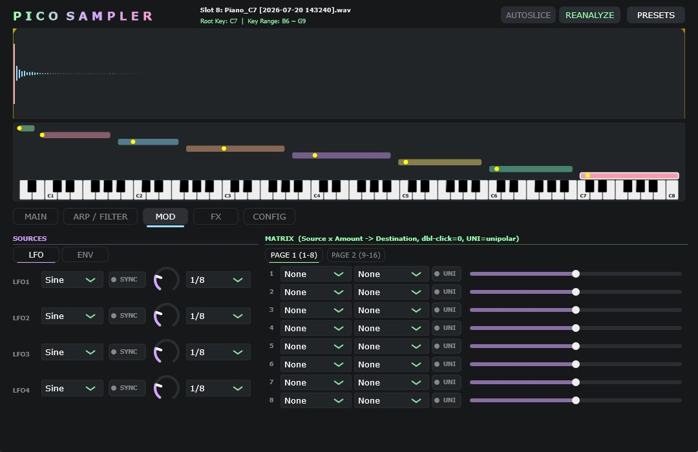
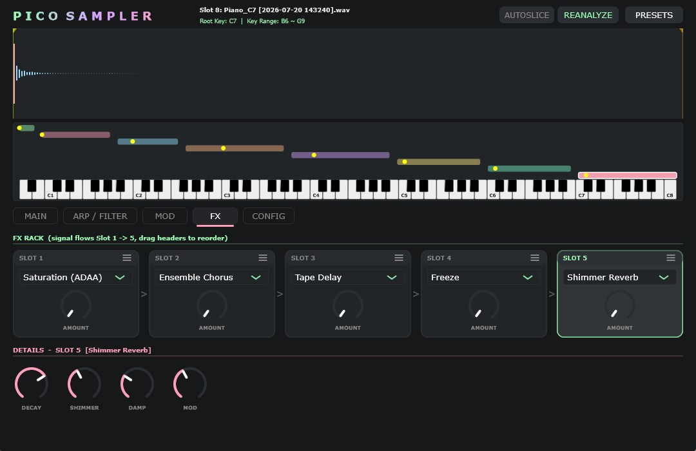
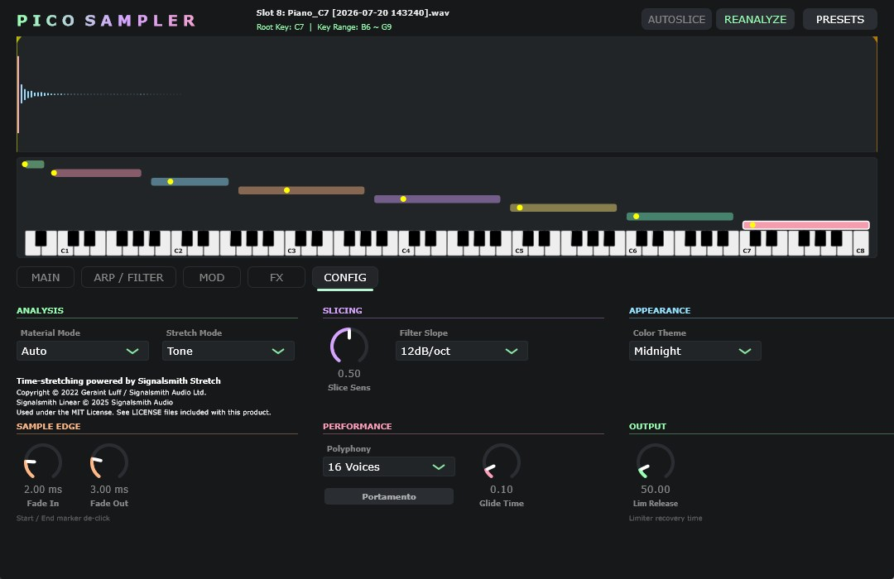

8SLOTに配置した音をランダムに再生したり、スケールクオンタイズされたアルペジエイターを使い、アナタの想像力を解放します。49アンカーの Signalsmith タイムストレッチ、10万倍ズーム、16スロットModMatrix、5スロットFXラックを凝縮。2026.7.30 正式公開！





| カテゴリ | パラメーター | 範囲 | 概要 |
|---|---|---|---|
| Sample Engine | Slots / Polyphony | 8 Slots / Max 32 Voices | Single, Layer, Random 再生モード |
| Time-Stretch | Signalsmith Stretch | -24 ～ +24 st / 49 anchors | フェーズボコーダー時間伸長・ピッチシフト |
| Filter | 3 Models | LPF / HPF / BPF | TPT SVF トポロジー・スムーズ制御 |
| Arpeggiator | Pattern / Rate / Scale | 13 patterns / 16 scales | テンポ同期・フリーラン・クオンタイズ |
| FX Rack | 5 Reorderable Slots | Sat / Chorus / Delay / Freeze / Reverb | マスター Dry/Wet 制御・Mod可能 |